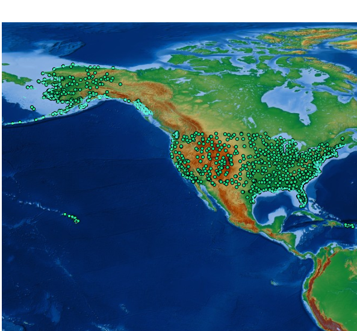

When I took what I had in my map about public school openings in Washington D.C., and applied it to a “packed bubbles” chart, I realized how geographically important my data actually was. When you take the map out of the picture, it causes the data to just be a number, rather then a place, time, and story. The place is the location in D.C., the time is the year opened, and the story is about the school. Taking one of those elements out, like the location loses the context of the story.
This data set could tell the story of the economic development or downfall of certain neighborhoods based on the opening and closing of its schools. It could show how many students attend each school and, if eventually paired with funding information for each school, could show the disproportionate funding certain schools get over others despite the number of students enrolled. This data set has ability to show a very diverse story of public education in D.C., but without the map, it will difficult to set the scene for the reader.
In this “packed bubbles” chart, the only information I get is how many different types of public schools have opened in Washington, D.C. from 1886 to 2004. The map is essential to providing context to this dataset. If I use this type of chart again, I would rather pair it with the funding each school receives separated by the different quadrants in D.C. It would be more interesting to see how much funding different types of schools receive in each quadrant and how that correlates to the number of students enrolled and programs offered. Right now, there’s not enough information to support this type of “packed bubbles” chart.
The Supreme Court on Friday agreed to hear a case that would drastically reduce the number of abortion clinics in the state of Texas, again. The case concerns two parts of a state law passed by then-Gov. Rick Perry in 2013. It imposed strict requirements on abortion providers, and caused half of the state's 41 abortion clinics to close.
Challengers of this law say it will encourage women to resort to unsafe or illegal methods of obtaining abortions.

In the U.S., the majority of Americans actually expressed the opinion that abortion should be legal in all or most cases.

On average, 60,000 women have an abortion each year in Texas.

This case has the ability affect the millions of women, specifically 20-29 year-olds, across the state of Texas in need of reproductive health care each year.
Data Source: United States Census Bureau 2010-2014 American Community Survey 5-Year Estimates

Red = Under 1,000,000
Green = Under 10,000,000
Blue = Over 10,000,000
Robin Dienel for American University.
Data Source: United States Census Bureau 2010-2014 American Community Survey 5-Year Estimates.

Robin Dienel for American University.
Data Source: USGS